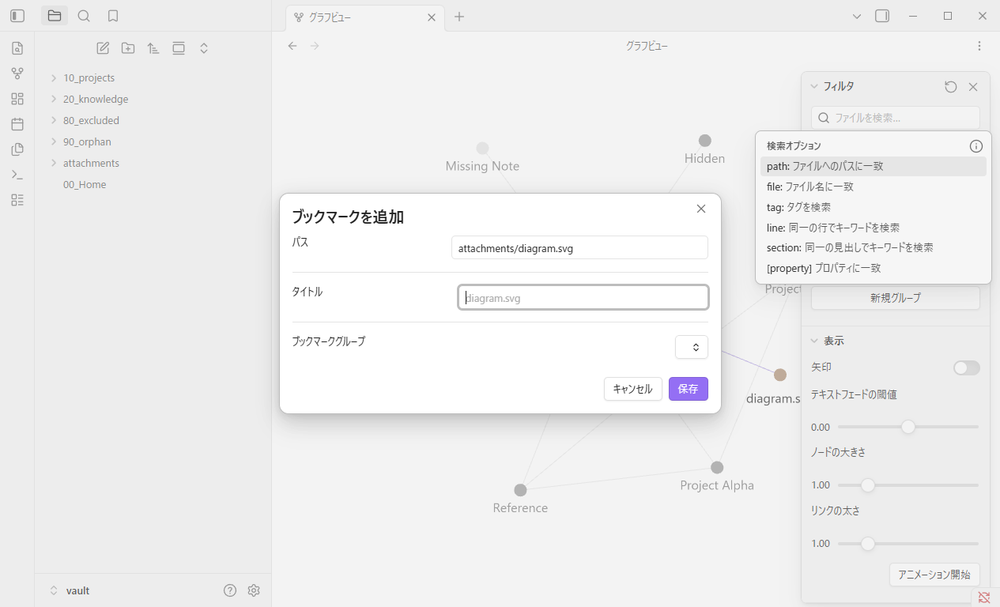
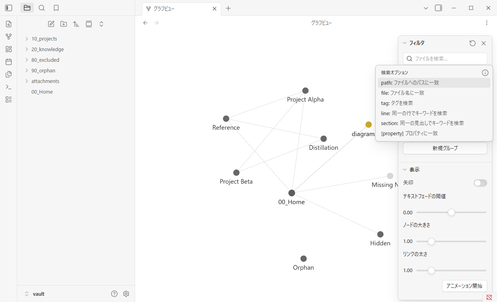
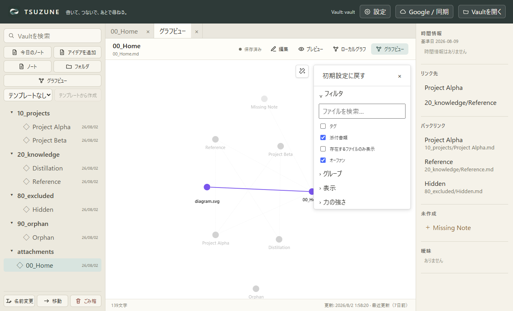
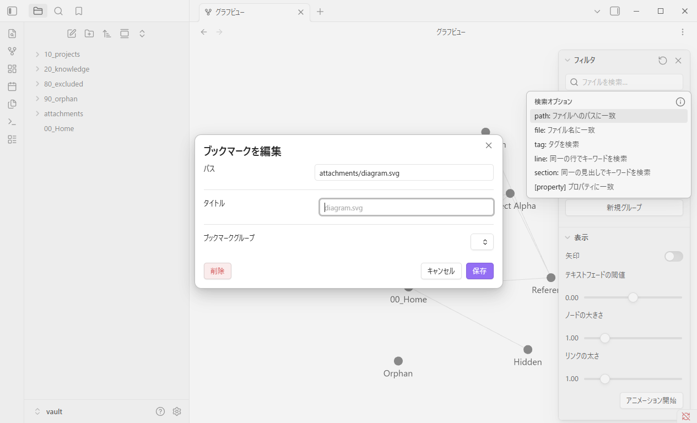
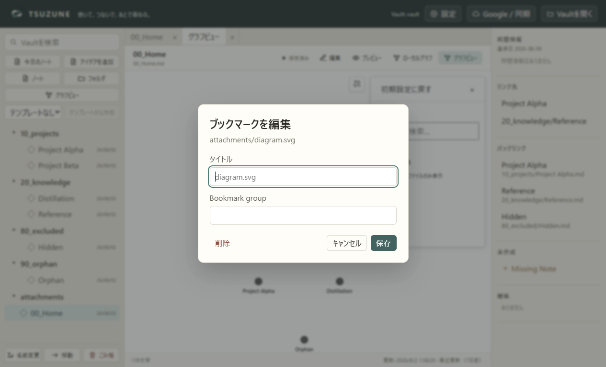
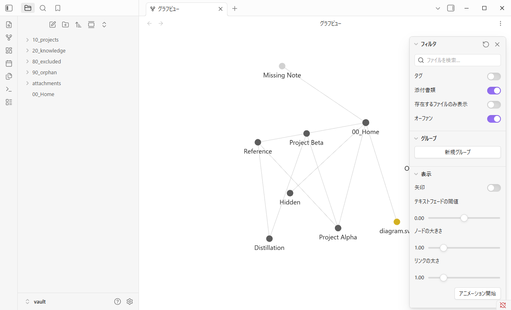
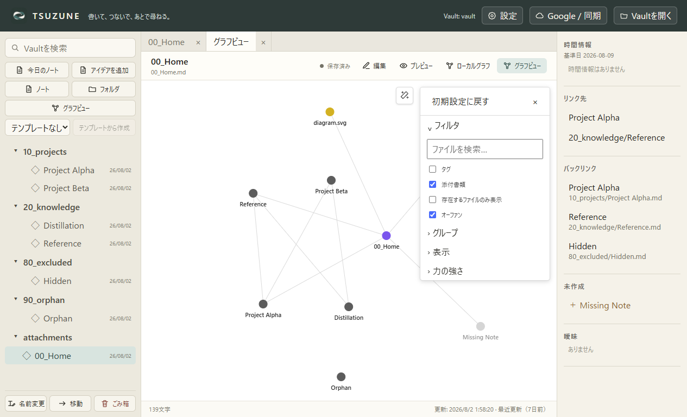

TSUZUNE × Obsidian 1.13.4 · GP0-3b-k
同じ添付をもう一度保存しても、
ブックマークは二重にならない。
作成、取消、同一pathの編集、ctime保持、Graph再表示、別プロセス再起動までを、同じfixtureと3シナリオで固定比較した。
matched core behavior · known UI gaps
比較結果
| 契約 | Obsidian | TSUZUNE | 判定 |
|---|---|---|---|
| 「ブックマーク…」から対象path・タイトル初期値・取消／保存を持つ追加dialogを開く | true | true | matched |
| 取消ではブックマークを作成しない | true | true | matched |
| 保存で対象pathのfile bookmarkを1件だけ作成する | true | true | matched |
| 同じpathを再操作すると「ブックマークを編集」になり、重複せず1件へupsertする | true | true | matched |
| 既存ブックマークの編集保存でctimeを保持する | true | true | matched |
| Graph再表示・別プロセス再起動後も結果を保持する | true | true | matched |
| Markdown・添付を含むVault内容を変更しない | true | true | matched |
| ブックマークグループ入力UI | selector button | plain text input | known-ui-gap |
| 添付nodeの右クリックmenu行数 | 11 | 5 | known-ui-gap |
追加dialog: 対象pathと保存／取消を確認

取消: 永続ブックマークを作らない


重複操作: 追加ではなく編集へ切り替える


別プロセス再起動: Graphと1件のブックマークを保持


残る差と境界
ブックマークの中核動作は一致した。Obsidianのグループselectorに対してTSUZUNEはplain text inputであり、添付context menu全体も11対5のままである。Bookmarks side panel全体は本sliceで比較していない。
- ObsidianのブックマークグループselectorとTSUZUNE plain text inputの視覚・操作一致
- Bookmarks side panel、一覧、並べ替え、グループ階層の一致
- 添付context menuの残り5操作と対象ラベル行
- pixel-identicalなGraph配置・dialog・menu
- 物理マウス、実OS keyboard、screen reader、High Contrast、複数DPI
次: GP0-3b-l パスをコピー
結論
GP0-3b-kでは添付ブックマークの作成、取消、同一path編集upsert、ctime保持、Graph再表示／別プロセス再起動保持、Vault内容不変を一致確認した。中核挙動はmatchedだが、グループ入力UI、menu全体、Bookmarks side panelは未一致または未証明であり、Graph parity全体やpixel equivalenceは主張しない。
Machine-readable source: assets/graph-gp0-attachment-bookmark/comparison.json